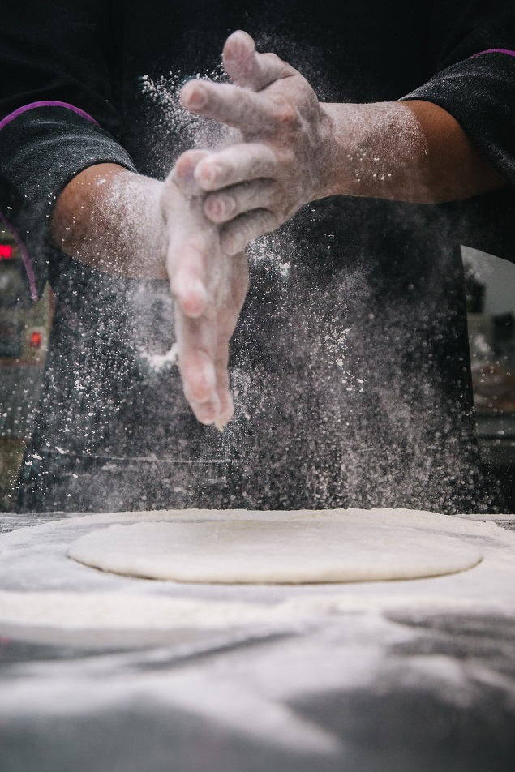
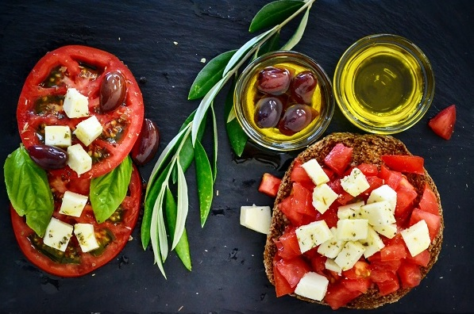
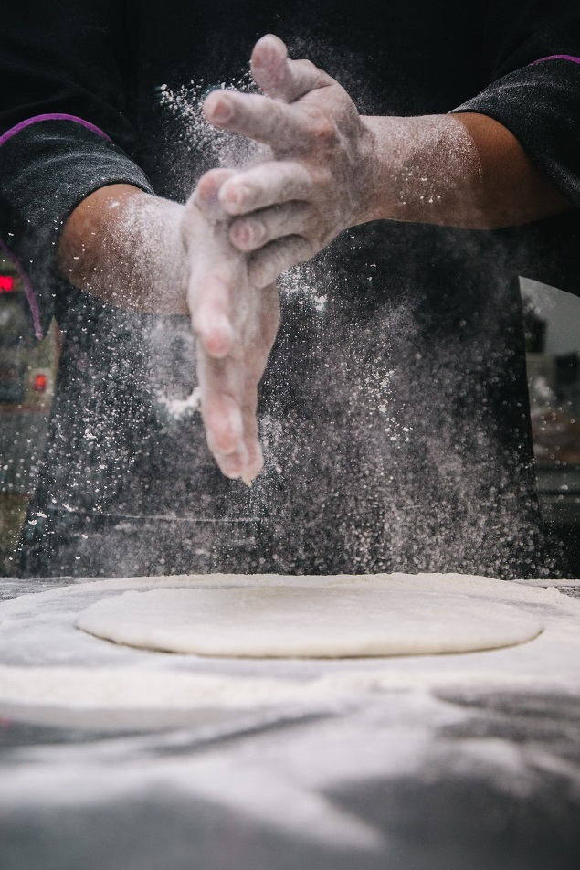
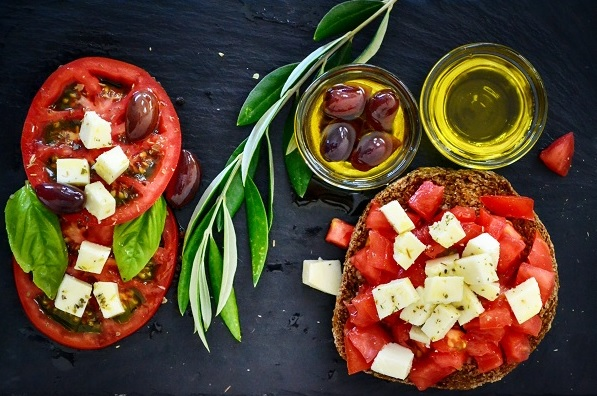

I Piaceri
BAR RESTAURANT
AUTHENTIC ITALIAN CUISINE
 



Located in the heart of the most emblematic area of Buenos Aires, Argentina, I Piaceri has been serving authentic Italian cuisine since 1895.
Its mix of traditional dishes with the latest Italian gastronomical tendencies, has made it a perfect place to experience a country's culinary evolution.
Its signature Masonry oven-made pizza, complimented with Chianti wine and Caprese salad, has rewarded the restaurant with 3 Michelin stars for the past 15 years in a row.